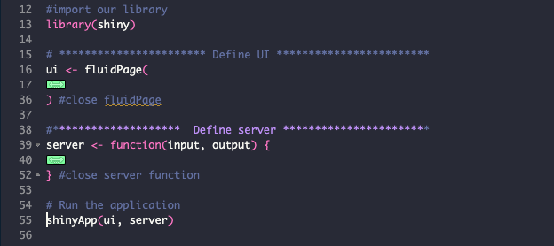
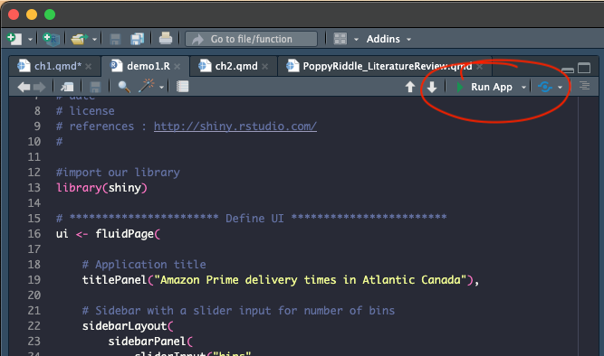
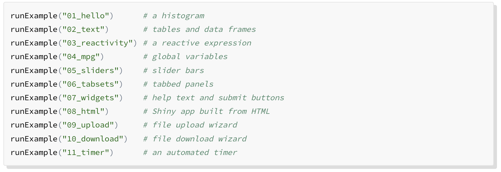
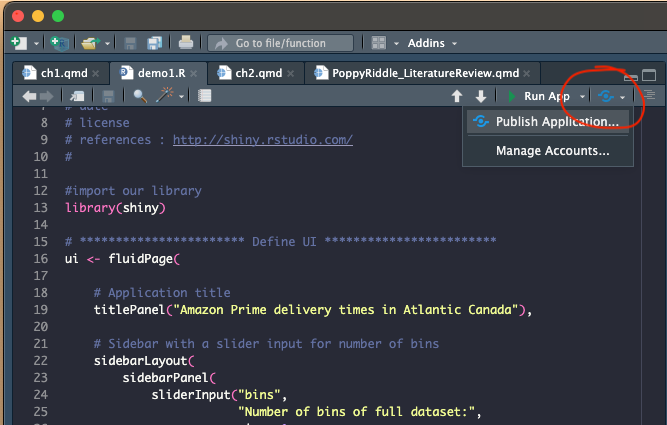
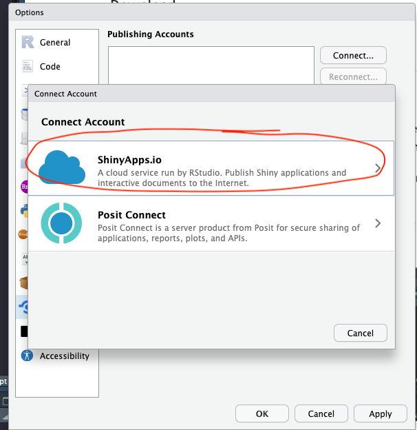
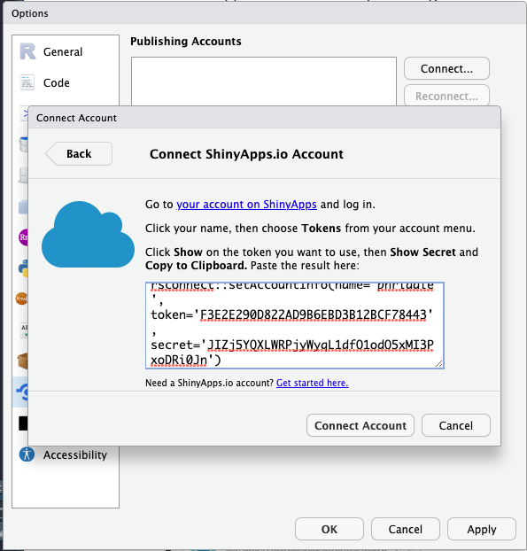
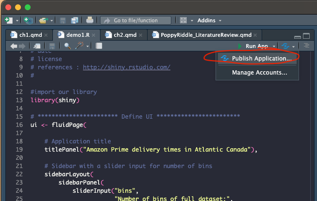
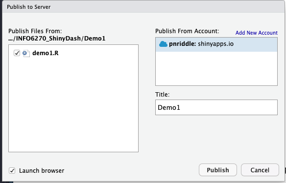

# this is written in R
print("Hello lovely people!")[1] "Hello lovely people!"What’s a ShinyApp?
Shiny is an R package that builds interactive web applications using R and RStudio to compile HTML files. The HTML files can be used locally, (just opened up using your browser from a local directory), or placed on a server to make public to anyone to use. Its not just for data, either! There are used as an education tool, a map for finding resources, business intelligence (BI) dashboards, tracking activities, calculators, file type conversion, and of course, for displaying the results of data analysis through interactive visualizations.
You are not restricted to just the web browser. You can configure your shiny app to include export to other document types, like PDFs, Word, or Excel.
The most important aspects of shiny are that its interactive and it is responsive, which means that it resizes automatically to adjust to the device being used. This means you design once, and it can be viewed on a laptop, desktop, tablet, or phone.
[image of other document types]
In Shiny, we code in R. In the following sections code will be shown in cells:
# this is written in R
print("Hello lovely people!")[1] "Hello lovely people!"In the second chapter we’ll explore R Markdown, which is a markdown language similiar to HTML but easier! We’ll explore this as another method of creating a dashboard. We won’t be spending much time on R Markdown, but as you have begun your journey in R and RStudio, you may want to consider it as it can make publishing much easier. You can learn more about R Markdown here. This document was created using Quarto in RStudio using RMarkdown.
You will see this term pop up occasionally especially with regards to themes. Bootstrap is the front-end web framework that provides basic security, templates (which we’ll take advantage of as themes for styling), URL routing, and data architecture among other things. Other programming languages have these frameworks and you may recognize the names, such as Django for use with Python or React for JavaScript. You don’t need to know too much about it, just know that its in the background behind Shiny doing all the work to actually create a secure webpage. We’ll be introducing Bootstrap themes later on.
The Shiny Gallery is really helpful when learning as the examples provided include their code, so you can see how they created the interfaces. Below, is an example of where we’re heading with this chapter and where we’ll be going in the next chapter which will lead you through the steps to creating a dashboard.

A simple dashboard is one that uses data that has been placed on the server, (or you have uploaded) and shows a variety of measures or calculations. In this case, we use data from OpenAlex and we perform simple calculations on the results.
Here is a link to one from the shinydashboard gallery.
A complex dashboard would be one that is a data stream, continuously updating based on real-time conditions.
source: https://www.delreyanalytics.com/post/an-simple-r-shiny-dashboard-for-real-time-streaming-data
Here is a link to one from the shinydashboard gallery.
[insert diagram]
This is the IDE, the integrated development environment, for R, (among many other prgramming languages). We’ll be using RStudio to create our shiny apps, test the code, preview results, and manage files.
Shiny apps are built on Bootstrap. But you don’t need to worry about that. The Shiny app code does all the work to place the elements you design into an html files and automatically manages all file dependencies. We’ll briefly discuss files when getting started with your first app.
When running a shiny application from RStudio, you can publish directly to a server. Thankfully, the R community has a server location where you can host up to 5 apps for free at shinyapps.io. Of course, you can pay for more space, but for now, this works for us!. Later on, we’ll walk you through publishing to the server directly from RStudio. Its surprisingly easy!
This optional application works in conjunction with github.com and enables to you sync files between your local storage, (laptop, desktop, Onedrive, etc) and your github repository. Its just a means of managing files and is not necessary, but is really helpful especially for collaborative projects.
This is a free online repository where you can store your code, and all the dependent files. Files can be uploaded easily from your local storage. Like Github desktop, this is not necessary, but helpful for keep your work in a safe place.
This link to the tutorials at shiny.rstudio.com can also guide you through steps to creating your own apps, including more detailed information on how to change elements to meet your needs.
Install the package down below in the console. You only need to do this once. If you uninstall and re-install your RStudio, you may need to reinstall packages.
install.packages("shiny")from Files>New File > Shiny Web app OR select new file from the pull down menu in the top toolbar.

This brings up a dialog box. Enter your project name. This will become the name of the folder that is created in the location you select.

Once you select Create you will see the template shiny app. This has three sections which we will cover next.

There are three main components to a shiny app: the ui, the server, and the shinyApp() function that calls the ui and server.
The ui (the user interface object) specifies the layout: where items are placed on the webpage.
The server function is the instructions for how shiny builds your app.
The shinyApp() function creates the actual app from the ui and server components
Past versions of shiny used multi-page layouts with the ui and server components saved as separate files, such as ui.R and server.R. While this is still supported, the rest of this chapter will assume that we’re using the single-page version in which the ui and server are together in one app.R file.
Under More, select Set as working directory. You can also do this in the console with:
setwd("~/your_folder_name")
We’ll be going through each of these items in more detail, but for now, you can see the basic structure.
To run the app, use the Run icon shown below. This will run in the RStudio viewer by default, but you can also run in your browser with the Run external option checked.

That’s it to run a basic Shiny app!!! The shiny library comes with many examples you can explore as well as even more sophisticated examples on the Gallery page.

That’s it! you’ve created a new app. Its simple right now, but we’ll explore more options later for designing something that works for your needs. Let’s discuss how we publish next so that you get a sense of the entire workflow.
Now we can start publishing online for the world to experience your brilliant research! A free account at shinyapps.io provides space for 5 applications and 25 active hours of server time. (what are active hours?)
Create a shinyapps.io account. You will need this login info to set up your RStudio to publish directly to shinyapps.io. I recommend connecting via your GitHub account, if you have one.
Back in RStudio, we need to connect to your shinyapp.io account. To the right of the Run icon, select the pull down menu.

Select Connect… and then choose shinyapps.io

Follow the instructions to find the token and paste into the space provided.

So exciting! Now, you are ready to publish to shinyapps.io!

Check all the files you want uploaded to the shinyapps.io server. In our case with this demo, it should only be one file, demo1.R.

That’s it! You’ve done it!! Now sit back and watch the cash and attention role in.
Within the ui section, we can determine the layout. Shiny apps support the following layouts:
The fluidPage creates your layout consisting of rows with each row dividable into columns. Rows keep things aligned along a horizontal line. Each row is a 12-unit grid and columns define how much of the 12 units are assigned to each column. However, these all scale to accommodate the browser width, hence the fluid part of the name. While there are other page types, fluidPage is so versatile, you’re likely to just use this.
fluidPage looks like this in the UI:
ui <- fluidPage(
title = "Hello Shiny!",
fluidRow(
column(width = 4,
"4"
),
column(width = 3, offset = 2,
"3 offset 2"
) #close column
) #close fluidRow
) #close fluidPageNote that the column widths don’t have to add to 12! You’re just telling it how much of the 12 units to reserve for that column.
Remember: rows contain columns. So, if you add a new fluidRow within a fluidPage layout, you can specify a different column spacing.
If you want to control the grid into multiple rows and columns, you can do that by calling fluidRow() and column() within the fluidPage. While rows will automatically align, you can make columns are different widths, and even offset widths.
Column examples here
A tabset panel creates tabs for multiple pages. This is a great way to present multiple datasets, or seperate text by topical areas.
tabsetPanel code
tabsetPanel result
The tabsetPanel can also be used in conjunction with the mainPanel() of a sidebarLayout!
example code
example image
The navbarPage is another page type, like the fluidPage. Some may consider this a little dated, but when you need a multipage app that has distinct layout elements, then this may be appropriate.
A navbarPage establishes a page that can include any of the layouts above, such as a sidebarLayout(), a grid system of fluidRows() and columns(), or a tabsetPanel().
ui <- navbarPage("Main page title",
tabPanel("Page 1"),
tabPanel("Page 2"),
tabPanel("Page 3"),
tabPanel("Page 4")
)#close navbarMenu
) #close navbarPage
The navbarMenu() is a sub-component of the navbarPage and provides a drop-down menu for additional tabPanel() elements.
navbarMenu code

Widgets are the interactive input controls that transform your website from static to a dynamic thing that your users can adjust, filter, select, upload or download what they need. There are 13 standard widgets you can choose from. While, we will address a few of these, you can find all of them and their code on the shiny gallery.
The syntax of the widget is very similar across the groups. Let’s look at the code below:

The download button is a special case and is not the same as a widget, however, its super useful for people to download a dataset or whatever you have prepared for them. The downloadHandler() function is critical to this working. In this case the downloadHandler is sending the file named data to the write.csv() function.
```
ui <- fluidPage(
downloadButton("downloadData", "Download")
)
server <- function(input, output) {
# Our dataset
data <- mtcars
output$downloadData <- downloadHandler(
filename = function() {
paste("data-", Sys.Date(), ".csv", sep=",")
},
content = function(file) {
write.csv(data, file)
}#close function
)#close downloadHandler
}#close server function
shinyApp(ui, server)With other libraries you can also write Excel files, such as with writexl. his version writes to an Excel file.
library(shiny)
library(writexl)
ui <- fluidPage(
downloadButton("downloadData", "Download")
)
server <- function(input, output) {
# Our dataset
data <- mtcars
output$downloadData <- downloadHandler(
filename = function() {
#paste("data-", Sys.Date(), ".csv", sep="")
paste("data-", Sys.Date(), ".xlsx")
},
content = function(file) {
#write.csv(data, file)
writexl::write_xlsx(data, file)
} #close function
) #close downloadHandler
}#close server function
shinyApp(ui, server)Bootstrap themes
In this chapter we’ve covered:
what it is
how it works
how to publish it.
The next chapter moves into a more detailed view of how to make shiny apps shine with interactivity and reactiveness. In other words, we’ll learn how to upload data, apply code to analyze it, and then download it.
I took inspiration and guidance from many sources which I’ve tried to include here:
The Bookdown library for R, at bookdown.org, provides a tutorial on how to build Shiny apps.